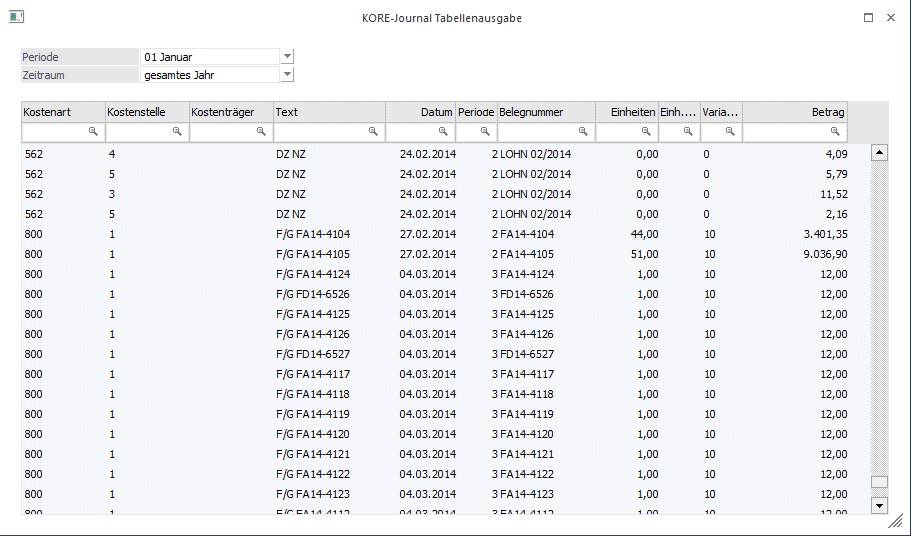
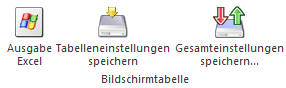

Durch die Anwahl des Ausgabe-Buttons "Ausgabe Tabelle" im Programm "KORE-Journal" werden alle zuvor selektierten Journalzeilen in Form einer WinLine Tabelle dargestellt.
Hinweis
Die Basis der Journalzeilen in der Tabelle bildet immer die zuvor getroffene Selektion im KORE-Journal. D.h. in der Tabelle kann dieses Datenmaterial nur weiter eingeschränkt werden.

Ø Periode
Auswahl der Periode, welche für den Zeitraum relevant ist. Der im Mandantenstamm hinterlegte Buchungsmonat wird voreingestellt.
Ø Zeitraum
An dieser Stelle kann gewählt werden, welcher Zeitraum in der Tabelle betrachtet werden soll. Hierbei stehen folgende Varianten zur Verfügung:
ü Periode
ü vorherige Periode
ü letzten 2 Perioden
ü letzten 3 Perioden
ü bis Periode
ü Quartal
ü Halbjahr
ü gesamtes Jahr
ü Vorjahr bis Periode
ü gesamtes Vorjahr
ü alle Jahre bis Periode
ü alle Jahre
Hinweis
Alle Zeitraumeinstellungen (außer "gesamtes Jahr" und "alle Jahre") beziehen sich auf die Auswahl im Feld "Periode".
Tabelle
In der Tabelle werden alle selektierten Journalzeilen angezeigt. Mit Hilfe der Suchzeile kann gezielt und komfortabel nach KORE-Journalzeilen gesucht werden.
Spalten können über das Kontextmenü der rechten Maustaste (Funktion "Spalten anzeigen/verstecken") in die Tabelle eingebunden bzw. entfernt werden.
Tabellenbuttons

Ø Ausgabe Excel
Durch Anwahl des Buttons "Ausgabe Excel" wird der Inhalt der Tabelle nach Microsoft Excel übergeben.
Ø Tabelleneinstellungen speichern
Die Spalten einer Tabelle können grundsätzlich an beliebige Positionen verschoben, bzw. in der Breite entsprechend angepasst werden. Durch Anwahl des Buttons "Tabelleneinstellungen speichern" werden die Einstellungen benutzerspezifisch gespeichert und bei dem nächsten Aufruf des Programmpunktes wieder vorgeschlagen.
Ø Gesamteinstellungen speichern
Im Gegensatz zu "Tabelleneinstellungen speichern" können mit "Gesamteinstellungen speichern" mehrere Tabellenaufbauten gespeichert und nach Wunsch geladen werden. Zusätzlich werden Sonderfunktionen der Tabelle (z.B. "Spalte gruppieren") ebenfalls bei der Speicherung bedacht.
Buttons
Ø Anzeigen
Durch Anwahl des Buttons "Anzeigen" bzw. der Taste F5 werden alle Suchkriterien der Suchzeile aufgehoben und der Inhalt der Tabelle neu aufgebaut.
Ø Ende
Mit Hilfe des Buttons "Ende" bzw. der Taste ESC wird das Fenster geschlossen.